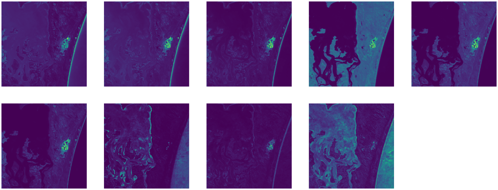

objearth.plotshow(*args,**kwargs)
Show a image or more
It can be used to display results and to identify areas of interest in the study for further enlarging.
Show a image or more
It can be used to display results and to identify areas of interest in the study for further enlarging.
ndaray value with 1D and 3D
ndarray
Since it is difficult to study the area of interest in satellite imagery, matplotlib has been applied for further use and programming in order to expand the area of interest. It can be used for both ndarray and xarray.
show blue band sattelite image (1D)
>>> from lazyearth import objearth as oe
>>> blue = oe.bandopen("...\LC08_L1TP_129051_20180605_20180615_01_T1_sr_band2.tif")
>>> oe.plotshow(blue)
>>> oe.plotshow(blue,[1000,3000,2000,4000])
show truecolor sattelite image (3D)
>>> from lazyearth import objearth as oe
>>> blue = oe.bandopen("...\sr_band2.tif")
>>> green = oe.bandopen("...\sr_band3.tif")
>>> red = oe.bandopen("...\sr_band4.tif")
>>> rgb = oe.bandcombination(red,green,blue)
>>> oe.plotshow(rgb)

>>> oe.plotshow(rgb_img,[800,1300,750,1250])
>>> oe.plotshow(rgb_img,[1000,1200,750,1250])
Showing more that one image
>>> from lazyearth import objearth as oe
>>> from lazyearth import water
>>> ds
<xarray.Dataset>
Dimensions: (latitude: 743, longitude: 743)
Coordinates:
time datetime64[ns] 2015-07-02T11:59:59.999999
* latitude (latitude) float64 -27.5 -27.5 -27.5 ... -27.7 -27.7 -27.7
* longitude (longitude) float64 153.3 153.3 153.3 ... 153.5 153.5 153.5
spatial_ref int32 4326
Data variables:
red (latitude, longitude) int16 215 212 210 208 ... 165 166 161 162
green (latitude, longitude) int16 478 475 474 470 ... 255 256 251 252
blue (latitude, longitude) int16 462 461 461 459 ... 359 363 359 358
nir (latitude, longitude) int16 82 83 82 80 78 ... 143 146 140 140
swir1 (latitude, longitude) int16 49 49 48 47 47 ... 109 112 107 109
swir2 (latitude, longitude) int16 40 41 40 38 37 ... 92 91 92 90 93
Attributes:
crs: EPSG:4326
grid_mapping: spatial_ref
>>> rgb = oe.bandcombination(ds.red,ds.green,ds.blue)
>>> ndvi = oe.NDVI(ds)
>>> Wqt = water(ds).waterquality()
>>> oe.plotshow(rgb,ndvi,Wqt)
>>> oe.plotshow(rgb,ndvi,Wqt,area=[300,700,0,400])
plot all of landsat8 bands
>>> from lazyearth import objearth as oe
>>> ds
<xarray.Dataset>
Dimensions: (latitude: 743, longitude: 743)
Coordinates:
time datetime64[ns] 2015-07-02T11:59:59.999999
* latitude (latitude) float64 -27.5 -27.5 -27.5 ... -27.7 -27.7 -27.7
* longitude (longitude) float64 153.3 153.3 153.3 ... 153.5 153.5 153.5
spatial_ref int32 4326
Data variables:
blue (latitude, longitude) int16 462 461 461 459 ... 359 363 359 358
green (latitude, longitude) int16 478 475 474 470 ... 255 256 251 252
red (latitude, longitude) int16 215 212 210 208 ... 165 166 161 162
nir (latitude, longitude) int16 82 83 82 80 78 ... 143 146 140 140
swir1 (latitude, longitude) int16 49 49 48 47 47 ... 109 112 107 109
swir2 (latitude, longitude) int16 40 41 40 38 37 ... 92 91 92 90 93
sdev (latitude, longitude) float32 0.004089 0.004165 ... 0.01818
edev (latitude, longitude) float32 92.71 95.55 97.62 ... 252.3 231.2
bcdev (latitude, longitude) float32 0.07602 0.07638 ... 0.2588 0.2622
count (latitude, longitude) int16 17 17 17 17 17 ... 18 18 18 18 18
Attributes:
crs: EPSG:4326
grid_mapping: spatial_ref
>>> blue = ds.blue
>>> green = ds.green
>>> red = ds.red
>>> nir = ds.nir
>>> swir1 = ds.swir1
>>> swir2 = ds.swir2
>>> sdev = ds.sdev
>>> edev = ds.edev
>>> bcdev = ds.bcdev
>>> oe.plotshow(blue,green,red,nir,swir1,swir2,sdev,edev,bcdev)